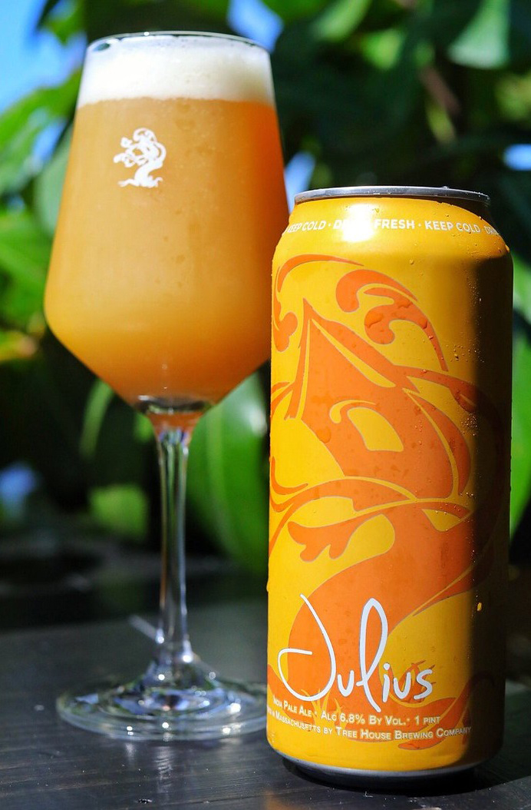

HOME
IPAs
Julius IPA
Tree House Brewing Co.
Bursting with fresh hand selected American hops, Julius - our flagship IPA - is a bright, juicy beer filled with flavors and aromas of mango, peach, passionfruit, and a melange of citrus juice. A soft, pillowy mouthfeel and rounded bitterness ensure it will never tire the palate.
Tree House owns and operates three facilities. The primary brewery and coffee roastery is located in Charlton, Massachusetts. We maintain a brewery in Monson, Massachusetts, and a Farm Fermentory in Woodstock Connecticut.
Check out their site HERE 